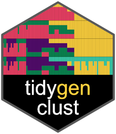
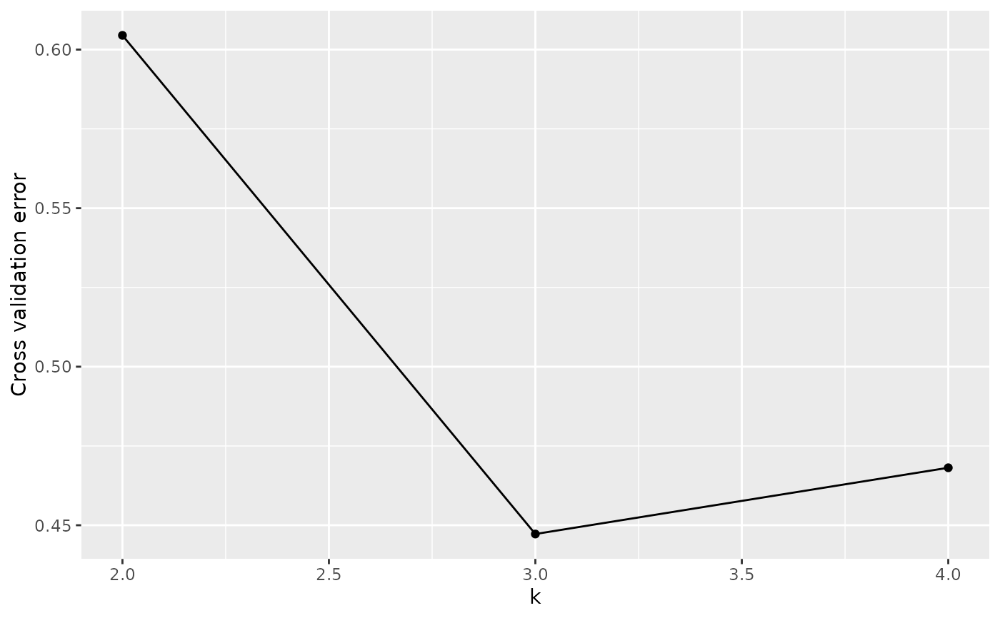

ADAMIXTURE algorithm for population genetics clustering
Source:R/gt_adamixture.R
gt_adamixture.RdThis function runs ADAMIXTURE, a python package for biobank-scale genetic clustering with the model of ADMIXTURE. It combines a spectral initialisation (SVD and ALS) with accelerated block relaxation (BR-QN) to reach high likelihoods with fast convergence. If you use this function, make sure that you cite the paper by Saurina-i-Ricos, Mas Montserrat and Ioannidis (2026).
Usage
gt_adamixture(
x,
k,
n_runs = 1,
threads = 1,
seed = 42,
tol = 0.1,
max_iter = 10000,
no_freqs = TRUE,
cv = NULL,
verbose = TRUE
)Arguments
- x
either a
tidypopgen::gen_tibble, or the name of the binary plink file (without the .bed extension)- k
the number of ancestral components (clusters), either a single value or a vector
- n_runs
the number of repeats for each k value (1)
- threads
the number of threads to use (1)
- seed
the random seed (defaults to 42): a vector of length
n_runs, with one seed per run (the same seeds are used for each value ofk), or a single seed, used for the first run and incremented for the following ones- tol
the tolerance: the fit stops when the log-likelihood changes by less than
tolbetween iterations (0.1)- max_iter
the maximum number of iterations (10000)
- no_freqs
do not save P-matrix (TRUE)
- cv
the number of cross-validation folds, greater than 1 (NULL, no cross-validation)
- verbose
boolean; should the progress of ADAMIXTURE be printed (TRUE)?
Value
an object of class gt_admix. See tidypopgen::gt_admixture() for
details. As for gt_radmix(), the P matrices give the frequency of the
alternate allele of each locus (for PLINK files, of the first allele in
the bim file).
Details
This function returns a gt_admix object that can be plotted with
autoplot, and tidied with tidy methods from the tidypopgen package.
Cross-validation is not performed by default (cv = NULL); if you want to
include cross-validation you can set cv to the number of folds, a value
greater than 1 (e.g. 5 for 5-fold cross-validation).
ADAMIXTURE is an optional tool, which is not needed by the rest of
tidygenclust (see gt_radmix() for a native implementation of the
ADMIXTURE model). It is installed by tgc_tools_install(), or it can be
added to an existing ctidygenclust conda environment with
tgc_adamixture_install() (only on Linux at the moment, see
tgc_tools_install()). Its CPU version, used here, does not need
PyTorch.
References
Saurina-i-Ricos, J., Mas Montserrat, D., & Ioannidis, A. G. (2026). ADAMIXTURE: adaptive first-order optimization for biobank-scale genetic clustering. Bioinformatics, 42(Supplement_1). doi: https://doi.org/10.1093/bioinformatics/btag236
Examples
# \donttest{
# ADAMIXTURE is optional: this example only runs if it is installed (see
# tgc_tools_install(), only on Linux at the moment)
if (!is.na(tgc_tools_version()$adamixture)) {
# the lizard Anolis punctatus, an example dataset of tidypopgen
vcf_path <- system.file("extdata", "anolis",
"punctatus_t70_s10_n46_filtered.recode.vcf.gz",
package = "tidypopgen"
)
anole_gt <- tidypopgen::gen_tibble(vcf_path,
quiet = TRUE, backingfile = tempfile("anolis_")
)
anole_ada <- gt_adamixture(anole_gt, k = 2:3, seed = 1, verbose = FALSE)
anole_ada$Q[[2]]
# choose K by cross-validation
anole_ada_cv <- gt_adamixture(anole_gt, k = 2:4, seed = 1, cv = 5,
verbose = FALSE
)
autoplot(anole_ada_cv, type = "cv")
}

# }